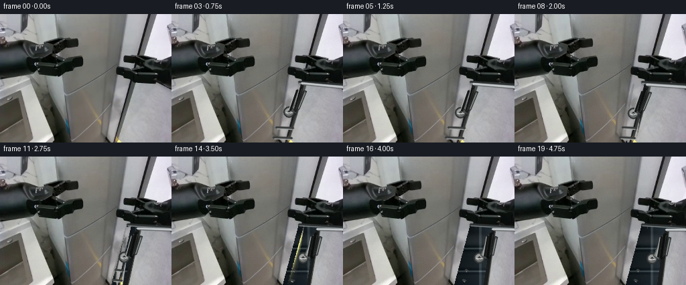

CODING AGENTS AS PIXEL WORLD MODELS
traex/DeepSeek-V4.1-Flash · common50_0009
点击播放 · 原生 RGB 像素
逐轮保存的候选
回放视频、检查图与代码变化。
每份候选均可单独播放。实际图片检查记录在下方工具轨迹中。
候选 01播放与检查图
点击播放 · 原生 RGB 像素
展开代码变化
--- 上一保存版本
+++ 本次保存版本
@@ -0,0 +1,371 @@
+from pathlib import Path
+
+import cv2
+import numpy as np
+from PIL import Image
+
+import artifact_io
+
+
+ROOT = Path(__file__).resolve().parent
+W, H, N = 256, 192, 20
+
+
+def smoothstep(value):
+ value = float(np.clip(value, 0.0, 1.0))
+ return value * value * (3.0 - 2.0 * value)
+
+
+def polygon_mask(points, feather=0.0):
+ mask = np.zeros((H, W), np.uint8)
+ cv2.fillPoly(mask, [np.round(points).astype(np.int32)], 255)
+ if feather > 0:
+ mask = cv2.GaussianBlur(mask, (0, 0), feather)
+ return mask.astype(np.float32) / 255.0
+
+
+def composite(base, layer, alpha):
+ alpha = alpha[..., None]
+ return np.clip(base * (1.0 - alpha) + layer * alpha, 0, 255).astype(np.uint8)
+
+
+def make_interior(source, p):
+ """Build the cool, shadowed cavity revealed behind the lower door."""
+ yy, xx = np.mgrid[0:H, 0:W]
+ xn = np.clip((xx - 164.0) / 92.0, 0.0, 1.0)
+ yn = np.clip((yy - 100.0) / 92.0, 0.0, 1.0)
+
+ # A dark refrigerator interior with a cool, low-contrast light falloff.
+ red = 15.0 + 31.0 * xn + 12.0 * yn
+ green = 19.0 + 34.0 * xn + 15.0 * yn
+ blue = 20.0 + 38.0 * xn + 18.0 * yn
+ image = np.dstack((red, green, blue))
+
+ # Reuse a small patch of the source's dark interior as fine photographic grain.
+ grain_patch = source[64:102, 176:232].astype(np.float32)
+ grain_patch = cv2.resize(grain_patch, (W, H), interpolation=cv2.INTER_CUBIC)
+ grain = grain_patch - grain_patch.mean(axis=(0, 1), keepdims=True)
+ image += grain * 0.20
+
+ # Back-wall panel and its specular edge.
+ panel_x = 201.0 + 3.0 * p
+ panel = (xx >= panel_x) & (xx < panel_x + 28.0)
+ image[panel] *= np.array([1.18, 1.17, 1.16], dtype=np.float32)
+ seam = np.exp(-((xx - panel_x) / 1.25) ** 2)
+ image += seam[..., None] * np.array([32.0, 35.0, 35.0], dtype=np.float32)
+ seam_hi = np.exp(-((xx - (panel_x + 2.0)) / 0.75) ** 2)
+ image += seam_hi[..., None] * np.array([20.0, 22.0, 23.0], dtype=np.float32)
+
+ # Two recessed shelves become visible as the door swings away.
+ for shelf_y in (137.0, 171.0):
+ shadow = np.exp(-((yy - (shelf_y - 3.0)) / 2.2) ** 2)
+ image -= shadow[..., None] * np.array([13.0, 12.0, 11.0], dtype=np.float32)
+ lip = np.exp(-((yy - shelf_y) / 1.1) ** 2)
+ image += lip[..., None] * np.array([42.0, 45.0, 44.0], dtype=np.float32)
+ under = np.exp(-((yy - (shelf_y + 3.0)) / 2.4) ** 2)
+ image -= under[..., None] * np.array([10.0, 9.0, 8.0], dtype=np.float32)
+
+ # A narrow cool light source at the top of the cavity.
+ top_glow = np.exp(-((yy - 104.0) / 10.0) ** 2) * np.clip((xx - 188.0) / 55.0, 0, 1)
+ image += top_glow[..., None] * np.array([7.0, 17.0, 22.0], dtype=np.float32)
+
+ # Slight floor contact shadow.
+ floor_shadow = np.clip((yy - 176.0) / 16.0, 0.0, 1.0)
+ image -= floor_shadow[..., None] * np.array([8.0, 7.0, 6.0], dtype=np.float32)
+
+ return np.clip(image, 0, 255).astype(np.uint8)
+
+
+def door_target(src_quad, angle, contact):
+ """Project a right-hinged door opening toward the camera."""
+ hinge_x = 258.0
+ theta = np.deg2rad(1.8 * contact + 48.0 * angle)
+ result = []
+ for x, y in src_quad:
+ distance = hinge_x - x
+ x_new = hinge_x - distance * np.cos(theta)
+ y_new = y + distance * np.sin(theta) * 0.10
+ result.append((x_new, y_new))
+ return np.asarray(result, np.float32)
+
+
+def arm_target(src_quad, angle, contact):
+ """Keep the right gripper's jaw locked to the moving door handle."""
+ p = smoothstep(max(0.0, angle))
+ c = float(np.clip(contact, 0.0, 1.0))
+ shift = 1.2 * c + 25.5 * p
+ lower_shift = 0.4 * c + 3.8 * p
+ tl = np.array(src_quad[0], np.float32) + np.array([shift, 3.8 * p])
+ tr = np.array(src_quad[1], np.float32) + np.array([shift, 4.8 * p])
+ br = np.array(src_quad[2], np.float32) + np.array([lower_shift, 0.0])
+ bl = np.array(src_quad[3], np.float32) + np.array([lower_shift, 0.0])
+ return np.asarray([tl, tr, br, bl], np.float32)
+
+
+def warp_quad(image, src_quad, dst_quad, alpha=None, interpolation=cv2.INTER_CUBIC):
+ matrix = cv2.getPerspectiveTransform(src_quad.astype(np.float32), dst_quad.astype(np.float32))
+ warped = cv2.warpPerspective(
+ image,
+ matrix,
+ (W, H),
+ flags=interpolation,
+ borderMode=cv2.BORDER_REFLECT_101,
+ )
+ target_alpha = polygon_mask(dst_quad, feather=0.45)
+ if alpha is not None:
+ warped_alpha = cv2.warpPerspective(
+ alpha,
+ matrix,
+ (W, H),
+ flags=cv2.INTER_LINEAR,
+ borderMode=cv2.BORDER_CONSTANT,
+ borderValue=0,
+ )
+ target_alpha *= warped_alpha
+ return warped, target_alpha
+
+
+def draw_door_details(frame, target, angle):
+ tl, tr, br, bl = target
+ p = smoothstep(angle)
+
+ # The rubber gasket is attached to the door and travels with it.
+ gasket = np.array(
+ [
+ [tl[0] - 1.5, tl[1] + 1.0],
+ [tl[0] + 4.0, tl[1] + 1.4],
+ [bl[0] + 4.5, bl[1] - 1.0],
+ [bl[0] - 1.0, bl[1] - 1.0],
+ ],
+ np.float32,
+ )
+ cv2.fillPoly(frame, [np.round(gasket).astype(np.int32)], (28, 30, 29))
+ cv2.line(
+ frame,
+ (int(round(tl[0] + 4.0)), int(round(tl[1] + 2.0))),
+ (int(round(bl[0] + 4.5)), int(round(bl[1] - 2.0))),
+ (74, 77, 76),
+ 1,
+ cv2.LINE_AA,
+ )
+
+ # Thin bright door thickness along the top edge.
+ cv2.line(
+ frame,
+ (int(round(tl[0])), int(round(tl[1]))),
+ (min(W - 1, int(round(tr[0]))), int(round(tr[1]))),
+ (196, 199, 201),
+ 2,
+ cv2.LINE_AA,
+ )
+ cv2.line(
+ frame,
+ (int(round(tl[0] + 1.0)), int(round(tl[1] + 2.0))),
+ (min(W - 1, int(round(tr[0]))), int(round(tr[1] + 2.0))),
+ (102, 105, 106),
+ 1,
+ cv2.LINE_AA,
+ )
+
+ # A short black handle strip makes the grip point unambiguous.
+ top_y = tl[1] + 7.0
+ bottom_y = tl[1] + 42.0
+ x_top = tl[0] - 2.0
+ x_bottom = tl[0] + (bl[0] - tl[0]) * ((bottom_y - tl[1]) / max(1.0, bl[1] - tl[1])) - 1.0
+ cv2.line(
+ frame,
+ (int(round(x_top)), int(round(top_y))),
+ (int(round(x_bottom)), int(round(bottom_y))),
+ (14, 16, 15),
+ 3,
+ cv2.LINE_AA,
+ )
+ cv2.line(
+ frame,
+ (int(round(x_top + 2.0)), int(round(top_y + 1.0))),
+ (int(round(x_bottom + 2.0)), int(round(bottom_y - 1.0))),
+ (57, 60, 59),
+ 1,
+ cv2.LINE_AA,
+ )
+ return np.array([x_top, top_y, x_bottom, bottom_y], np.float32)
+
+
+def draw_wrist_and_fingers(frame, handle, angle, contact):
+ x_top, top_y, x_bottom, bottom_y = handle
+ p = smoothstep(angle)
+ c = float(np.clip(contact, 0.0, 1.0))
+ wrist_x = x_top - 17.0 - 1.5 * p
+ wrist_y = top_y + 36.0
+
+ # Subtle shadow of the gripper on the door.
+ shadow = np.array(
+ [
+ [wrist_x + 5, wrist_y - 11],
+ [x_top + 4, top_y + 1],
+ [x_bottom + 5, bottom_y],
+ [x_bottom - 5, bottom_y + 3],
+ [wrist_x + 12, wrist_y + 5],
+ ],
+ np.float32,
+ )
+ shadow_layer = np.zeros_like(frame)
+ cv2.fillPoly(shadow_layer, [np.round(shadow).astype(np.int32)], (8, 10, 9))
+ shadow_alpha = polygon_mask(shadow, feather=1.3) * (0.20 + 0.10 * c)
+ frame[:] = composite(frame, shadow_layer, shadow_alpha)
+
+ # A compact servo wrist in front of the existing metal forearm.
+ cv2.circle(frame, (int(round(wrist_x)), int(round(wrist_y))), 8, (48, 51, 51), -1, cv2.LINE_AA)
+ cv2.circle(frame, (int(round(wrist_x)), int(round(wrist_y))), 6, (103, 106, 105), -1, cv2.LINE_AA)
+ cv2.circle(frame, (int(round(wrist_x - 1)), int(round(wrist_y - 1))), 4, (154, 157, 156), -1, cv2.LINE_AA)
+ cv2.circle(frame, (int(round(wrist_x)), int(round(wrist_y))), 2, (45, 48, 47), -1, cv2.LINE_AA)
+ cv2.line(
+ frame,
+ (int(round(wrist_x - 5)), int(round(wrist_y + 1))),
+ (int(round(wrist_x + 5)), int(round(wrist_y + 1))),
+ (215, 218, 216),
+ 1,
+ cv2.LINE_AA,
+ )
+
+ # Two slim parallel jaws. They straddle the black handle strip.
+ left_jaw = np.array(
+ [
+ [wrist_x + 2, wrist_y - 4],
+ [x_top - 4, top_y + 2],
+ [x_bottom - 4, bottom_y - 1],
+ [wrist_x + 10, wrist_y + 1],
+ ],
+ np.float32,
+ )
+ right_jaw = np.array(
+ [
+ [x_top + 5, top_y + 4],
+ [x_top + 9, top_y + 5],
+ [x_bottom + 8, bottom_y - 3],
+ [x_bottom + 4, bottom_y - 4],
+ ],
+ np.float32,
+ )
+ cv2.fillPoly(frame, [np.round(left_jaw).astype(np.int32)], (132, 136, 135))
+ cv2.polylines(frame, [np.round(left_jaw).astype(np.int32)], True, (62, 66, 65), 1, cv2.LINE_AA)
+ cv2.line(
+ frame,
+ (int(round(x_top - 7)), int(round(top_y + 4))),
+ (int(round(x_bottom - 7)), int(round(bottom_y - 2))),
+ (205, 208, 207),
+ 1,
+ cv2.LINE_AA,
+ )
+ cv2.fillPoly(frame, [np.round(right_jaw).astype(np.int32)], (88, 92, 91))
+ cv2.polylines(frame, [np.round(right_jaw).astype(np.int32)], True, (43, 46, 45), 1, cv2.LINE_AA)
+ cv2.line(
+ frame,
+ (int(round(x_top + 7)), int(round(top_y + 7))),
+ (int(round(x_bottom + 7)), int(round(bottom_y - 4))),
+ (139, 143, 142),
+ 1,
+ cv2.LINE_AA,
+ )
+
+ # Dark rubber contact pads on the inner faces of both fingers.
+ cv2.line(
+ frame,
+ (int(round(x_top - 5)), int(round(top_y + 4))),
+ (int(round(x_bottom - 5)), int(round(bottom_y - 2))),
+ (22, 24, 23),
+ 2,
+ cv2.LINE_AA,
+ )
+ cv2.line(
+ frame,
+ (int(round(x_top + 5)), int(round(top_y + 5))),
+ (int(round(x_bottom + 5)), int(round(bottom_y - 3))),
+ (28, 30, 29),
+ 1,
+ cv2.LINE_AA,
+ )
+
+
+def make_frame(source, index):
+ if index == 0:
+ return source.copy()
+
+ # Contact settles first, then the door opens with a smooth mechanical ease.
+ contact = smoothstep(index / 4.0)
+ angle = smoothstep((index - 3.0) / 15.0)
+
+ frame = source.copy()
+
+ # Replace the old door area with the cavity, preserving the bright body edge.
+ interior_quad = np.array([[190, 101], [256, 105], [256, 192], [166, 192]], np.float32)
+ interior = make_interior(source, angle)
+ interior_alpha = polygon_mask(interior_quad, feather=0.35)
+ frame = composite(frame, interior, interior_alpha)
+
+ # A dark lip and cool highlight along the opening.
+ cv2.line(frame, (190, 101), (255, 105), (46, 50, 50), 2, cv2.LINE_AA)
+ cv2.line(frame, (190, 103), (255, 107), (132, 137, 138), 1, cv2.LINE_AA)
+
+ # Re-project the original silver door.
+ door_src = np.array([[194, 103], [256, 109], [256, 192], [171, 192]], np.float32)
+ door_dst = door_target(door_src, angle, contact)
+ door_patch, door_alpha = warp_quad(source, door_src, door_dst)
+ frame = composite(frame, door_patch, door_alpha)
+ handle = draw_door_details(frame, door_dst, angle)
+
+ # Move the bright right-hand forearm/gripper with the handle. Only the metal
+ # pixels are carried so the old door seam remains as body-edge structure.
+ arm_src = np.array([[146, 192], [171, 103], [193, 103], [180, 192]], np.float32)
+ arm_dst = arm_target(arm_src, angle, contact)
+ gray = cv2.cvtColor(source, cv2.COLOR_RGB2GRAY).astype(np.float32) / 255.0
+ metal_alpha = polygon_mask(arm_src, feather=0.8) * np.clip((gray - 0.24) / 0.38, 0.0, 1.0)
+ arm_patch, arm_alpha = warp_quad(source, arm_src, arm_dst, alpha=metal_alpha)
+ frame = composite(frame, arm_patch, arm_alpha * 0.96)
+
+ # Mechanical articulation bands and the visible gripper/wrist.
+ draw_wrist_and_fingers(frame, handle, angle, contact)
+ for band_y in (169.0, 184.0):
+ left_x = arm_dst[0, 0] + (arm_dst[1, 0] - arm_dst[0, 0]) * (band_y - arm_dst[0, 1]) / (arm_dst[1, 1] - arm_dst[0, 1])
+ right_x = arm_dst[3, 0] + (arm_dst[2, 0] - arm_dst[3, 0]) * (band_y - arm_dst[3, 1]) / (arm_dst[2, 1] - arm_dst[3, 1])
+ cv2.line(
+ frame,
+ (int(round(left_x + 3)), int(round(band_y))),
+ (int(round(right_x - 3)), int(round(band_y + 1))),
+ (58, 61, 60),
+ 2,
+ cv2.LINE_AA,
+ )
+ cv2.line(
+ frame,
+ (int(round(left_x + 4)), int(round(band_y + 2))),
+ (int(round(right_x - 4)), int(round(band_y + 3))),
+ (167, 171, 170),
+ 1,
+ cv2.LINE_AA,
+ )
+
+ # Very restrained sensor noise and exposure drift keep the sequence from
+ # looking like a frozen texture with vector overlays.
+ rng = np.random.default_rng(1000 + index)
+ noise = rng.normal(0.0, 1.15, (H, W, 1))
+ frame = np.clip(frame.astype(np.float32) + noise, 0, 255).astype(np.uint8)
+ return frame
+
+
+def main():
+ source = np.asarray(Image.open(ROOT / "first_frame.png").convert("RGB"), dtype=np.uint8)
+ assert source.shape == (H, W, 3)
+
+ frames = np.stack([make_frame(source, index) for index in range(N)])
+ assert frames.shape == (N, H, W, 3) and frames.dtype == np.uint8
+ assert np.array_equal(frames[0], source)
+
+ artifact_io.save(frames, ROOT)
+ print(f"saved {N} frames to {ROOT}")
+ print(f"frame 00 exact: {np.array_equal(frames[0], source)}")
+ print(f"frame 19 mean abs delta: {np.abs(frames[19].astype(int) - source.astype(int)).mean():.2f}")
+
+
+if __name__ == "__main__":
+ main()
候选 02播放与检查图
候选 03播放与检查图
点击播放 · 原生 RGB 像素

展开代码变化
--- 上一保存版本
+++ 本次保存版本
@@ -79,7 +79,7 @@
def door_target(src_quad, angle, contact):
"""Project a right-hinged door opening toward the camera."""
hinge_x = 258.0
- theta = np.deg2rad(1.8 * contact + 48.0 * angle)
+ theta = np.deg2rad(1.8 * contact + 58.0 * angle)
result = []
for x, y in src_quad:
distance = hinge_x - x
可观测工具轨迹
实际执行的命令与返回图片。
命令 1exit 0
/bin/bash -c "sed -n '1,240p' prompt.txt"
命令 2exit 0
/bin/bash -c "sed -n '1,280p' GENERATION_RULES.md"
命令 3exit 0
/bin/bash -c "ls -la && find . -maxdepth 2 -type f -printf '%p %s bytes\\n' | sort"
命令 4exit 0
/bin/bash -c "pwd && rg --files -g 'prompt.txt' -g 'GENERATION_RULES.md' -g 'first_frame.png' -g '"'!*.mp4'"' -g '"'!*.webm'"'"
命令 5exit 0
/bin/bash -c 'cat task_spec.json'
命令 6exit 0
/bin/bash -c "sed -n '1,260p' artifact_io.py"
命令 7exit 0
/bin/bash -c "python - <<'PY'
from PIL import Image
import numpy as np
im=Image.open('first_frame.png')
a=np.asarray(im)
print(im.mode, im.size, a.shape, a.dtype)
print('min/max/mean', a.min((0,1)), a.max((0,1)), a.mean((0,1)).round(2))
for y in range(0,192,16):
print(y, [tuple(a[y,x]) for x in range(0,256,32)])
PY"命令 8exit 0
/bin/bash -c "python - <<'PY'
from PIL import Image
import numpy as np
a=np.asarray(Image.open('first_frame.png').convert('RGB')).astype(float)
g=.299*a[:,:,0]+.587*a[:,:,1]+.114*a[:,:,2]
# local contrast-ish edge
import scipy.ndimage as ndi
# 80x60 blocks with box downscale; represent luminance
h,w=g.shape
chars=' .:-=+*#%@'
for yy in range(0,h,4):
line=''
for xx in range(0,w,3):
v=g[yy:yy+4,xx:xx+3].mean()
line+=chars[min(9,int(v/256*10))]
print(f'{yy:03d} '+line)
PY"命令 9exit 1
/bin/bash -c "python - <<'PY'
import cv2, scipy, skimage
print('cv2', cv2.__version__, 'scipy', scipy.__version__, 'skimage', skimage.__version__)
PY"命令 10exit 0
/bin/bash -c "python - <<'PY'
import cv2, numpy as np
from PIL import Image
a=np.asarray(Image.open('first_frame.png').convert('RGB'))
# kmeans colors
z=a.reshape(-1,3).astype(np.float32)
crit=(cv2.TERM_CRITERIA_EPS+cv2.TERM_CRITERIA_MAX_ITER,50,.2)
K=12
_,lab,cent=cv2.kmeans(z,K,None,crit,8,cv2.KMEANS_PP_CENTERS)
lab=lab.reshape(192,256)
for i,c in enumerate(cent.astype(int)):
ys,xs=np.where(lab==i)
print(i, 'RGB', tuple(c), 'n',len(xs),'bbox', (xs.min(),ys.min(),xs.max(),ys.max()), 'med', (np.median(xs),np.median(ys)))
# edges/hough
edges=cv2.Canny(cv2.cvtColor(a,cv2.COLOR_RGB2GRAY),40,110)
lines=cv2.HoughLinesP(edges,1,np.pi/180,threshold=28,minLineLength=20,maxLineGap=5)
print('lines')
if lines is not None:
for l in sorted(lines[:,0].tolist(), key=lambda q: -(q[2]-q[0])**2-(q[3]-q[1])**2)[:60]: print(l)
PY"命令 11exit 0
/bin/bash -c "python - <<'PY'
from PIL import Image
import numpy as np, cv2
a=np.asarray(Image.open('first_frame.png').convert('RGB'))
g=cv2.cvtColor(a,cv2.COLOR_RGB2GRAY)
e=cv2.Canny(g,30,80)
# downsample max edge
for yy in range(0,192,2):
line=''
for xx in range(0,256,2):
n=e[yy:yy+2,xx:xx+2].mean()
line += ' ' if n<10 else ('.' if n<35 else ('+' if n<80 else '#'))
print(f'{yy:03d} '+line)
PY"命令 12exit 0
/bin/bash -c "python - <<'PY'
import cv2, numpy as np
from PIL import Image
a=np.asarray(Image.open('first_frame.png').convert('RGB'))
z=a.reshape(-1,3).astype(np.float32)
crit=(cv2.TERM_CRITERIA_EPS+cv2.TERM_CRITERIA_MAX_ITER,100,.1)
for K in [6,10,16]:
_,lab,cent=cv2.kmeans(z,K,None,crit,10,cv2.KMEANS_PP_CENTERS)
lab=lab.reshape(192,256)
# order by brightness and map letters
order=np.argsort(cent.mean(1))
chars='0123456789abcdef'
remap=np.zeros(K,int)
for j,i in enumerate(order): remap[i]=j
print('\\nK',K)
for j,i in enumerate(order): print(chars[j], tuple(cent[i].astype(int)))
for yy in range(0,192,4):
line=''
for xx in range(0,256,4):
ids,cnt=np.unique(remap[lab[yy:yy+4,xx:xx+4]],return_counts=True)
line+=chars[ids[cnt.argmax()]]
print(f'{yy:03d} '+line)
PY"命令 13exit 0
/bin/bash -c "python - <<'PY'
from PIL import Image
im=Image.open('first_frame.png')
print(im.info)
PY"命令 14exit 0
/bin/bash -c "python - <<'PY'
import cv2,numpy as np
from PIL import Image
a=np.asarray(Image.open('first_frame.png').convert('RGB'))
g=cv2.cvtColor(a,cv2.COLOR_RGB2GRAY)
for y in range(0,192,8):
row=g[max(0,y-1):y+2].mean(0)
grad=np.abs(np.diff(row))
inds=np.where(grad>12)[0]
# clusters
if len(inds):
groups=np.split(inds,np.where(np.diff(inds)>2)[0]+1)
print(f'y={y:03d}:', ' '.join(f'{int(q.mean())}({grad[q].max():.0f})' for q in groups if len(q)))
PY"命令 15exit 0
/bin/bash -c "python - <<'PY'
from PIL import Image
import numpy as np, cv2
im=Image.open('first_frame.png')
a=np.asarray(im)
# Make nearest-neighbor crops into upscaled panels
crops={'left':(0,0,130,192),'center':(80,0,190,192),'right':(165,0,256,192),'lower':(0,80,256,192)}
for k,(x0,y0,x1,y1) in crops.items():
crop=im.crop((x0,y0,x1,y1))
s=4 if k"'!='"'lower' else 3
crop.resize((crop.width*s,crop.height*s),Image.Resampling.NEAREST).save('.tmp/'+k+'.png')
PY"命令 16exit 0
/bin/bash -c "python - <<'PY'
import cv2,numpy as np
from PIL import Image
a=np.asarray(Image.open('first_frame.png').convert('RGB'))
# Search white-ish metal panel segmentation in top-right; print dominant masks/lines based color
hsv=cv2.cvtColor(a,cv2.COLOR_RGB2HSV)
for desc,mask in [('bright', (a.mean(2)>190)), ('silver',(a.mean(2)>145)&(a.mean(2)<230)&(hsv[:,:,1]<35)), ('dark',a.mean(2)<40)]:
ys,xs=np.where(mask)
print(desc, len(xs), 'bbox', (xs.min(),ys.min(),xs.max(),ys.max()))
# line segments with LSD
lsd=cv2.createLineSegmentDetector(cv2.LSD_REFINE_ADV)
lines=lsd.detect(cv2.cvtColor(a,cv2.COLOR_RGB2GRAY))[0]
vals=[]
for l in lines[:,0]:
x1,y1,x2,y2=l
le=((x2-x1)**2+(y2-y1)**2)**.5
ang=np.degrees(np.arctan2(y2-y1,x2-x1))
vals.append((le,ang,x1,y1,x2,y2))
for v in sorted(vals,reverse=True)[:80]:print('len %.1f ang %.1f (%.1f,%.1f)-(%.1f,%.1f)'%v)
PY"命令 17exit 0
/bin/bash -c "python - <<'PY'
from PIL import Image
import numpy as np
a=np.asarray(Image.open('first_frame.png').convert('RGB')).astype(int)
for y in [0,10,20,30,40,50,60,70,80,90,100,110,120,130,140,150,160,170,180,190]:
print('\\ny',y)
for x in range(0,256,8):
c=a[y,x]
print(f'{x:3d}:{c[0]:3d},{c[1]:3d},{c[2]:3d}',end=' ')
print()
PY"命令 18exit 0
/bin/bash -c "python - <<'PY'
import cv2,numpy as np
from PIL import Image
a=np.asarray(Image.open('first_frame.png').convert('RGB'))
g=cv2.cvtColor(a,cv2.COLOR_RGB2GRAY)
# inspect edge / optical flow no
# Color variance / texture in big silver surfaces
for name,(x0,y0,x1,y1) in {'panel_mid':(90,35,185,185),'right':(190,100,256,192),'left':(0,100,95,192),'top':(0,0,210,40)}.items():
p=a[y0:y1,x0:x1]
print(name, p.mean((0,1)).round(1), p.std((0,1)).round(1))
# print Sobel gradient strength in panel; vertical/horiz
sx=cv2.Sobel(g,cv2.CV_32F,1,0,ksize=3);sy=cv2.Sobel(g,cv2.CV_32F,0,1,ksize=3)
for y in range(0,192,10):
print(y,'sx',np.abs(sx[y]).mean().round(1),'sy',np.abs(sy[y]).mean().round(1))
PY"命令 19exit 0
/bin/bash -c "python - <<'PY'
import cv2,numpy as np
from PIL import Image
a=np.asarray(Image.open('first_frame.png').convert('RGB'))
# edge map with coordinate grid, store as pgm for conceptual maybe
g=cv2.cvtColor(a,cv2.COLOR_RGB2GRAY)
e=cv2.Canny(g,35,100)
# overlay coords 16 pixels on source? save annotated
out=a.copy()
for x in range(0,256,16):
cv2.line(out,(x,0),(x,191),(255,0,0),1)
cv2.putText(out,str(x),(x+1,12),cv2.FONT_HERSHEY_SIMPLEX,.25,(255,0,0),1,cv2.LINE_AA)
for y in range(0,192,16):
cv2.line(out,(0,y),(255,y),(255,0,0),1)
cv2.putText(out,str(y),(1,y+10),cv2.FONT_HERSHEY_SIMPLEX,.25,(255,0,0),1,cv2.LINE_AA)
Image.fromarray(out).resize((1024,768),Image.Resampling.NEAREST).save('.tmp/grid.png')
PY"命令 20exit 0
/bin/bash -c "python - <<'PY'
import cv2,numpy as np
from PIL import Image
a=np.asarray(Image.open('first_frame.png').convert('RGB'))
# test likely panel boundary line and color profiles along line
for x in [174,175,176,177,178,179,180,181,182,183,184,185,186,187,188,189,190,191,192]:
p=a[:,x].mean(1)
print(x, [int(p[y]) for y in range(0,192,12)])
PY"命令 21exit 0
/bin/bash -c "python - <<'PY'
import cv2,numpy as np
from PIL import Image
a=np.asarray(Image.open('first_frame.png').convert('RGB'))
# Smooth edge density per large cells
edge=cv2.Canny(cv2.cvtColor(a,cv2.COLOR_RGB2GRAY),40,100)
print('edge density 32x32')
for y in range(0,192,16):
print(f'{y:03d}', ' '.join(f'{edge[y:y+16,x:x+16].mean()/255*100:3.0f}' for x in range(0,256,16)))
# color block means 16x16
print('rgb mean 32x32')
for y in range(0,192,32):
print('row',y)
for x in range(0,256,32):
c=a[y:y+32,x:x+32].mean((0,1)).astype(int)
print(f'({x},{y}) {tuple(c)}',end='; ')
print()
PY"命令 22exit 0
/bin/bash -c "python - <<'PY'
import cv2,numpy as np
from PIL import Image
a=np.asarray(Image.open('first_frame.png').convert('RGB'))
g=cv2.cvtColor(a,cv2.COLOR_RGB2GRAY)
# bilateral + canny then contours
for name,e in [('raw',cv2.Canny(g,40,100)),('blur',cv2.Canny(cv2.GaussianBlur(g,(3,3),0),30,80)),('adapt',cv2.adaptiveThreshold(g,255,cv2.ADAPTIVE_THRESH_GAUSSIAN_C,cv2.THRESH_BINARY,15,5))]:
cs,_=cv2.findContours(e,cv2.RETR_LIST,cv2.CHAIN_APPROX_SIMPLE)
vals=[]
for c in cs:
area=cv2.contourArea(c); peri=cv2.arcLength(c,True)
if area>100:
hull=cv2.convexHull(c); ha=cv2.contourArea(hull)
approx=cv2.approxPolyDP(hull,.03*peri,True)
x,y,w,h=cv2.boundingRect(c)
vals.append((area,ha,x,y,w,h,len(approx),approx[:,0].tolist()))
print('\\n',name,'n',len(vals))
for q in sorted(vals,reverse=True)[:25]:print('area %.0f hull %.0f bbox %s nv %d pts %s'%(q[0],q[1],q[2:6],q[6],q[7]))
PY"命令 23exit 0
/bin/bash -c "python - <<'PY'
from PIL import Image
import numpy as np, cv2
im=Image.open('first_frame.png').convert('RGB')
# extreme enlarged sectors for edge-based mental visualization via printed quantized luminance with 2px resolution, only select x ranges
for x0,x1 in [(0,128),(80,176),(150,256)]:
print('\\nRANGE',x0,x1)
for y in range(0,192,2):
line=''
for x in range(x0,x1,1):
v=int(im.getpixel((x,y))[0]*.3+im.getpixel((x,y))[1]*.59+im.getpixel((x,y))[2]*.11)
line += ' .:-=+*#%@'[min(9,v//26)]
print(f'{y:03d} '+line)
PY"命令 24exit 0
/bin/bash -c "python - <<'PY'
from PIL import Image
import numpy as np
im=Image.open('first_frame.png').convert('RGB')
a=np.asarray(im)
# row summaries for right zone: segments of similar mean RGB
for y in range(0,120,4):
row=a[y]
segs=[]; start=0; last=row[0].astype(int)
for x in range(1,256):
c=row[x].astype(int)
if np.abs(c-last).max()>25:
if x-start>=3: segs.append((start,x-1,tuple(np.mean(row[start:x],0).astype(int))))
start=x
last=c
if 256-start>=3: segs.append((start,255,tuple(np.mean(row[start:],0).astype(int))))
print(f'{y:03d}', ' '.join(f'{s}-{e}:{c}' for s,e,c in segs if e>=150))
PY"命令 25exit 0
/bin/bash -c "python - <<'PY'
import cv2,numpy as np
from PIL import Image
a=np.asarray(Image.open('first_frame.png').convert('RGB'))
g=cv2.cvtColor(a,cv2.COLOR_RGB2GRAY)
# find lines constrained relevant ranges
for name,roi in [('top-right',(180,0,256,110)),('middle',(80,30,190,120)),('lower',(0,90,256,192))]:
x0,y0,x1,y1=roi; e=cv2.Canny(g[y0:y1,x0:x1],30,90)
lines=cv2.HoughLinesP(e,1,np.pi/360,threshold=10,minLineLength=12,maxLineGap=4)
print('\\n',name)
if lines is not None:
vals=[]
for x1_,y1_,x2_,y2_ in lines[:,0]:
x1_+=x0;y1_+=y0;x2_+=x0;y2_+=y0
le=((x2_-x1_)**2+(y2_-y1_)**2)**.5; ang=np.degrees(np.arctan2(y2_-y1_,x2_-x1_))
vals.append((le,ang,x1_,y1_,x2_,y2_))
for v in sorted(vals,reverse=True)[:35]:print('len %.1f ang %.1f (%d,%d)-(%d,%d)'%v)
PY"命令 26exit 0
/bin/bash -c "python - <<'PY'
import cv2,numpy as np
from PIL import Image
a=np.asarray(Image.open('first_frame.png').convert('RGB'))
g=cv2.cvtColor(a,cv2.COLOR_RGB2GRAY)
e=cv2.Canny(g,40,100)
# Overlay detected line candidates in magenta and key geometric polylines in colors
out=a.copy()
# manually assumed panel polygon
poly=np.array([[188,0],[256,0],[256,103],[193,100],[177,78]],np.int32)
cv2.polylines(out,[poly],True,(255,0,255),1)
# annotate numbers every 32
for x in range(0,256,32): cv2.putText(out,str(x),(x+1,190),cv2.FONT_HERSHEY_SIMPLEX,.25,(255,0,0),1)
for y in range(0,192,32): cv2.putText(out,str(y),(245,y+8),cv2.FONT_HERSHEY_SIMPLEX,.25,(255,0,0),1)
Image.fromarray(out).resize((1024,768),Image.Resampling.NEAREST).save('.tmp/panel_poly.png')
PY"命令 27exit 1
/bin/bash -c "python - <<'PY'
import cv2,numpy as np
from PIL import Image
a=np.asarray(Image.open('first_frame.png').convert('RGB')).astype(np.float32)
# fit lines by color boundaries / canny and manually expected sides using RANSAC
g=cv2.cvtColor(a.astype(np.uint8),cv2.COLOR_RGB2GRAY)
e=cv2.Canny(g,30,90)
ys,xs=np.where(e>0)
for name,mask in [('right lower', (xs>150)&(ys>90)),('right top',(xs>170)&(ys<90)),('diag',(xs>85)&(xs<175)&(ys>70)&(ys<140))]:
pts=np.c_[xs[mask],ys[mask]].astype(np.float32)
if len(pts)<3: continue
lines=cv2.HoughLinesP((e*mask).astype(np.uint8),1,np.pi/720,threshold=10,minLineLength=15,maxLineGap=8)
print('\\n',name,len(pts))
if lines is not None:
for l in sorted(lines[:,0],key=lambda q:-((q[2]-q[0])**2+(q[3]-q[1])**2))[:20]:
x1,y1,x2,y2=l; print(l, 'ang',round(np.degrees(np.arctan2(y2-y1,x2-x1)),1), 'len',round(np.hypot(x2-x1,y2-y1),1))
PY"命令 28exit 0
/bin/bash -c "python - <<'PY'
import cv2,numpy as np
from PIL import Image
a=np.asarray(Image.open('first_frame.png').convert('RGB'))
g=cv2.cvtColor(a,cv2.COLOR_RGB2GRAY)
e=cv2.Canny(g,30,90)
H,W=e.shape
for name,roi in [('right lower',(150,90,256,192)),('right top',(170,0,256,90)),('diag',(85,70,175,140)),('center top',(80,20,190,120))]:
x0,y0,x1,y1=roi
ee=np.zeros_like(e); ee[y0:y1,x0:x1]=e[y0:y1,x0:x1]
lines=cv2.HoughLinesP(ee,1,np.pi/720,threshold=8,minLineLength=12,maxLineGap=5)
print('\\n',name)
if lines is not None:
for l in sorted(lines[:,0],key=lambda q:-((q[2]-q[0])**2+(q[3]-q[1])**2))[:25]:
x1_,y1_,x2_,y2_=l; print(tuple(l), 'ang',round(np.degrees(np.arctan2(y2_-y1_,x2_-x1_)),1), 'len',round(np.hypot(x2_-x1_,y2_-y1_),1))
PY"命令 29exit 0
/bin/bash -c "sed -n '1,240p' player_template.html"
命令 30exit 0
/bin/bash -c "python - <<'PY'
import cv2,numpy as np
from PIL import Image
a=np.asarray(Image.open('first_frame.png').convert('RGB'))
hsv=cv2.cvtColor(a,cv2.COLOR_RGB2HSV)
g=cv2.cvtColor(a,cv2.COLOR_RGB2GRAY)
for desc,m in [
('bright140',(g>140)),('bright170',(g>170)),('silver140',(g>140)&(hsv[:,:,1]<40)),('mid100-180',(g>100)&(g<180)&(hsv[:,:,1]<40)),('dark<50',(g<50)),('verydark<25',(g<25))]:
m=(m.astype(np.uint8)*255)
m=cv2.morphologyEx(m,cv2.MORPH_OPEN,np.ones((3,3),np.uint8))
n,lab,stats,cent=cv2.connectedComponentsWithStats(m)
comps=[]
for i in range(1,n):
x,y,w,h,area=stats[i]
if area>30: comps.append((area,x,y,w,h))
print('\\n',desc)
for q in sorted(comps,reverse=True)[:20]:print(q)
PY"命令 31exit 0
/bin/bash -c "python - <<'PY'
import cv2,numpy as np
from PIL import Image
a=np.asarray(Image.open('first_frame.png').convert('RGB'))
# print a 2x downsample of RGB hex grid at 8x8 means, use actual hex only around panel
for y in range(0,192,8):
print(f'{y:03d}', ' '.join('%02x%02x%02x'%tuple(a[y:y+8,x:x+8].mean((0,1)).astype(int)) for x in range(160,256,8)))
PY"命令 32exit 0
/bin/bash -c "python - <<'PY'
import cv2,numpy as np
from PIL import Image
a=np.asarray(Image.open('first_frame.png').convert('RGB'))
# use segmentation from color: approximate exact bright panel, print mask grid
g=cv2.cvtColor(a,cv2.COLOR_RGB2GRAY)
for th in [100,120,140,160,180,200]:
m=g>th
print('\\nth',th)
for y in range(0,192,4):
line=''
for x in range(0,256,4): line += '#' if m[y:y+4,x:x+4].mean()>.65 else ' '
print(f'{y:03d}|'+line+'|')
PY"命令 33exit 0
/bin/bash -c "python - <<'PY'
from PIL import Image
import numpy as np
a=np.asarray(Image.open('first_frame.png').convert('RGB'))
for y in range(96,192,4):
vals=[]
for x in range(150,231):
g=int(a[y,x].mean())
vals.append(' .:-=+*#%@'[min(9,g//26)])
print(f'{y:03d} '+''.join(vals))
print(' '+''.join(str((x//10)%10) for x in range(150,231)))
print(' '+''.join(str(x%10) for x in range(150,231)))
PY"命令 34exit 0
/bin/bash -c "python - <<'PY'
from PIL import Image
import numpy as np
a=np.asarray(Image.open('first_frame.png').convert('RGB'))
# left and center black gap map each 2 pixels, y 30-100 x 0-200
for y in range(30,100,2):
line=''
for x in range(0,200,2):
v=a[y:y+2,x:x+2].mean()
line += '#' if v<20 else ('+' if v<50 else ('-' if v<90 else ('=' if v<140 else ' ')))
print(f'{y:03d} '+line)
PY"命令 35exit 0
/bin/bash -c "python - <<'PY'
import cv2,numpy as np
from PIL import Image
a=np.asarray(Image.open('first_frame.png').convert('RGB')).astype(float)
# display hue/sat map maybe find distinct color: print dominant hue for 8x8 blocks
hsv=cv2.cvtColor(a.astype(np.uint8),cv2.COLOR_RGB2HSV)
for y in range(0,192,8):
vals=[]
for x in range(0,256,8):
h,s,v=hsv[y:y+8,x:x+8].mean((0,1)); vals.append(int(h/10))
print(f'{y:03d}', ''.join('0123456789'[min(9,q)] for q in vals))
print('saturation')
for y in range(0,192,16):
vals=[]
for x in range(0,256,8):
h,s,v=hsv[y:y+16,x:x+8].mean((0,1)); vals.append(int(s/20))
print(f'{y:03d}', ''.join('0123456789'[min(9,q)] for q in vals))
PY"命令 36exit 0
/bin/bash -c "python - <<'PY'
from PIL import Image
import numpy as np
a=np.asarray(Image.open('first_frame.png').convert('RGB'))
# estimate coordinate structures: print luminance per pixel around x 150-230 y 95-140 (values only low-res every 2)
for y in range(94,142,2):
print(f'{y:03d}', ' '.join(f'{int(a[y,x].mean()):3d}' for x in range(150,231,2)))
PY"命令 37exit 0
/bin/bash -c "python - <<'PY'
from PIL import Image
import numpy as np
a=np.asarray(Image.open('first_frame.png').convert('RGB'))
# contours of dark handle region using thresholds and print bounding boxes
import cv2
for th in [20,30,40,50,60,70,80,90]:
m=((a.mean(2)<th).astype(np.uint8)*255)
# morphology close
m=cv2.morphologyEx(m,cv2.MORPH_CLOSE,np.ones((3,3),np.uint8))
cs,_=cv2.findContours(m,cv2.RETR_EXTERNAL,cv2.CHAIN_APPROX_SIMPLE)
print('\\nth',th)
for c in sorted(cs,key=cv2.contourArea,reverse=True)[:12]:
ar=cv2.contourArea(c);x,y,w,h=cv2.boundingRect(c)
if ar>50: print(round(ar), (x,y,w,h))
PY"命令 38exit 0
/bin/bash -c "python - <<'PY'
from PIL import Image
import numpy as np, cv2
a=np.asarray(Image.open('first_frame.png').convert('RGB'))
g=cv2.cvtColor(a,cv2.COLOR_RGB2GRAY)
# For all edge points print line fit to dark handle side boundaries and label map around x 170-220 y 60-120
for x in [174,175,176,177,178,179,180,181,182,183,184,185,186,187,188,189,190,191,192,193,194,195,196,197,198,199,200,201,202,203,204,205,206,207,208,209,210,211,212,213,214,215,216,217,218,219,220,221,222,223,224,225,226,227,228,229,230]:
p=g[:,x]
# min y where g<30 contiguous >10
mask=p<30
# runs
runs=[]; st=None
for y,v in enumerate(mask):
if v and st is None: st=y
if not v and st is not None:
if y-st>5:runs.append((st,y-1))
st=None
if st is not None and 192-st>5:runs.append((st,191))
if runs: print(x,runs)
PY"命令 39exit 0
/bin/bash -c "python - <<'PY'
import cv2,numpy as np
from PIL import Image
a=np.asarray(Image.open('first_frame.png').convert('RGB'))
g=cv2.cvtColor(a,cv2.COLOR_RGB2GRAY)
e=cv2.Canny(g,30,90)
# get strongest line at x 170-230 and use exact color boundary: save sampled labels no
# line fit for dark mask around lower handle
ys,xs=np.where(g<25)
for roi in [(150,90,240,130),(180,90,235,120),(160,100,220,125)]:
x0,y0,x1,y1=roi;m=(xs>=x0)&(xs<x1)&(ys>=y0)&(ys<y1); p=np.c_[xs[m],ys[m]]
print(roi,len(p))
# RANSAC via cv2 fitLine
if len(p):
vx,vy,x0_,y0_=cv2.fitLine(p.astype(np.float32),cv2.DIST_L2,0,.01,.01).flatten()
print('fit',vx,vy,x0_,y0_, 'ang',np.degrees(np.arctan2(vy,vx)))
PY"命令 40exit 0
/bin/bash -c "python - <<'PY'
import cv2,numpy as np
from PIL import Image
a=np.asarray(Image.open('first_frame.png').convert('RGB'))
g=cv2.cvtColor(a,cv2.COLOR_RGB2GRAY)
# print grayscale right 150-230 every pixel for y 96-110
for y in range(96,111):
print(f'{y:03d}', ''.join('0123456789abcdef'[min(15,int(g[y,x]//16))] for x in range(150,231)))
print(' ', ''.join(str(x%10) for x in range(150,231)))
PY"命令 41exit 0
/bin/bash -c "python - <<'PY'
import cv2,numpy as np
from PIL import Image
a=np.asarray(Image.open('first_frame.png').convert('RGB')).astype(np.float32)
g=cv2.cvtColor(a.astype(np.uint8),cv2.COLOR_RGB2GRAY).astype(np.float32)
e=cv2.Canny(g.astype(np.uint8),30,90).astype(np.float32)
# fit right fridge outer edge: collect canny in x170-210 y80-192
ys,xs=np.where(e>0)
for name,roi,anglim in [('right edge',(150,90,210,192),(-90,-60)),('handle edge',(165,90,240,130),(-50,0)),('top side',(170,0,240,90),(-90,-50))]:
x0,y0,x1,y1=roi;m=(xs>=x0)&(xs<x1)&(ys>=y0)&(ys<y1);p=np.c_[xs[m],ys[m]]
if len(p)<2:continue
vx,vy,cx,cy=cv2.fitLine(p.astype(np.float32),cv2.DIST_L2,0,.01,.01).flatten()
print(name,len(p),'center',cx,cy,'ang',np.degrees(np.arctan2(vy,vx)))
# endpoints projection
t=(p[:,0]-cx)*vx+(p[:,1]-cy)*vy
print(' proj',t.min(),t.max(), 'ends',p[t.argmin()],p[t.argmax()])
PY"命令 42exit 0
/bin/bash -c "python - <<'PY'
from PIL import Image
import numpy as np
a=np.asarray(Image.open('first_frame.png').convert('RGB'))
# print coordinate-labeled color map of center diagonal x70-190 y60-130
for y in range(60,131,2):
print(f'{y:03d}', ' '.join('%3d'%int(a[y,x].mean()) for x in range(70,191,2)))
PY"命令 43exit 0
/bin/bash -c "python - <<'PY'
from PIL import Image
import numpy as np
a=np.asarray(Image.open('first_frame.png').convert('RGB')).astype(int)
# print values along line y=96 from x 160 to230 and y=104
for y in [64,68,72,80,88,96,104,112,120,128,136,144,152,160,168,176,184]:
print('\\ny',y)
for x in range(155,231,1):
print(f'{x}:{int(a[y,x].mean()):3d}',end=' ')
print()
PY"命令 44exit 0
/bin/bash -c "python - <<'PY'
from PIL import Image
import numpy as np
a=np.asarray(Image.open('first_frame.png').convert('RGB'))
# print central diagonal band high contrast ascii at full x res 70-200 every pixel y60-125 step2
for y in range(60,126,2):
line=''
for x in range(70,201):
v=a[y,x].mean()
line += ' ' if v>130 else ('#' if v<25 else ('+' if v<60 else ('-' if v<95 else '.')))
print(f'{y:03d} '+line)
print(' '+''.join(str((x//10)%10) for x in range(70,201)))
print(' '+''.join(str(x%10) for x in range(70,201)))
PY"命令 45exit 0
/bin/bash -c 'python generate.py'
命令 46exit 0
/bin/bash -c "python - <<'PY'
from PIL import Image
import numpy as np
for i in [0,1,3,5,8,12,16,19]:
a=np.asarray(Image.open(f'frames/{i:02d}.png').convert('RGB')).astype(float)
print(i,'mean',a.mean((0,1)).round(1),'std',a.std().round(1),'dark',np.mean(a.mean(2)<20).round(3),'bright',np.mean(a.mean(2)>150).round(3))
# frame differences
ims=[np.asarray(Image.open(f'frames/{i:02d}.png').convert('RGB')).astype(int) for i in range(20)]
for i in range(1,20):
print(i, np.abs(ims[i]-ims[i-1]).mean().round(2), np.max(np.abs(ims[i]-ims[i-1])))
PY"命令 47exit 0
/bin/bash -c "python - <<'PY'
from PIL import Image
import numpy as np
# ascii for final frame and frame 12, downsample grayscale
for idx in [1,5,10,15,19]:
a=np.asarray(Image.open(f'frames/{idx:02d}.png').convert('RGB'))
g=a.mean(2)
print('\\nFRAME',idx)
for y in range(0,192,4):
line=''
for x in range(0,256,3):
v=g[y:y+4,x:x+3].mean()
line+=' .:-=+*#%@'[min(9,int(v//26))]
print(f'{y:03d} '+line)
PY"命令 48exit 0
/bin/bash -c "python - <<'PY'
import cv2,numpy as np
from PIL import Image
for idx in [0,10,19]:
a=np.asarray(Image.open(f'frames/{idx:02d}.png').convert('RGB'))
g=cv2.cvtColor(a,cv2.COLOR_RGB2GRAY)
for th in [150,180]:
m=((g>th).astype(np.uint8)*255)
m=cv2.morphologyEx(m,cv2.MORPH_OPEN,np.ones((2,2),np.uint8))
n,lab,stats,cent=cv2.connectedComponentsWithStats(m)
comps=sorted([(int(stats[i,4]),*map(int,stats[i,:4])) for i in range(1,n) if stats[i,4]>80],reverse=True)[:8]
print(idx,'th',th,comps)
PY"命令 49exit 0
/bin/bash -c "python - <<'PY'
from PIL import Image
import numpy as np
s=np.asarray(Image.open('first_frame.png').convert('RGB')).astype(int)
for i in [5,10,15,19]:
a=np.asarray(Image.open(f'frames/{i:02d}.png').convert('RGB')).astype(int)
d=np.abs(a-s).mean(2)
ys,xs=np.where(d>15)
print(i,'changed>15',len(xs),'bbox', (xs.min(),ys.min(),xs.max(),ys.max()) if len(xs) else None,'centroid', (xs.mean().round(1),ys.mean().round(1)) if len(xs) else None)
# changed counts by 32x32
for y in range(0,192,32):
print(' ',[int((d[y:y+32,x:x+32]>15).sum()) for x in range(0,256,32)])
PY"命令 50exit 0
/bin/bash -c "python - <<'PY'
from PIL import Image
import numpy as np
a=np.asarray(Image.open('frames/19.png').convert('RGB')).astype(float)
# panel region mean/std by y blocks and x blocks
for y in range(96,192,16):
print('y',y,[tuple(a[y:y+16,x:x+16].mean((0,1)).round().astype(int)) for x in range(160,256,16)])
PY"命令 51exit 0
/bin/bash -c "python - <<'PY'
from PIL import Image
import numpy as np
for idx in [0,19]:
a=np.asarray(Image.open(f'frames/{idx:02d}.png').convert('RGB'))
print('\\n',idx)
for y in range(96,192,8):
print(f'{y:03d}', ''.join('0123456789abcdef'[min(15,int(a[y,x].mean()//16))] for x in range(160,256,2)))
PY"命令 52exit 0
/bin/bash -c "python - <<'PY'
import cv2,numpy as np
from PIL import Image
# print line fits for moving door edge in final frame
a=np.asarray(Image.open('frames/19.png').convert('RGB'))
g=cv2.cvtColor(a,cv2.COLOR_RGB2GRAY)
e=cv2.Canny(g,30,90)
H,W=e.shape
for roi in [(160,100,230,192),(180,100,256,192),(150,95,220,150)]:
x0,y0,x1,y1=roi; ee=np.zeros_like(e);ee[y0:y1,x0:x1]=e[y0:y1,x0:x1]
ls=cv2.HoughLinesP(ee,1,np.pi/720,threshold=10,minLineLength=18,maxLineGap=5)
print('\\n',roi)
if ls is not None:
for l in sorted(ls[:,0],key=lambda q:-((q[2]-q[0])**2+(q[3]-q[1])**2))[:25]:
x1_,y1_,x2_,y2_=l
print(tuple(l),'ang',round(np.degrees(np.arctan2(y2_-y1_,x2_-x1_)),1),'len',round(np.hypot(x2_-x1_,y2_-y1_),1))
PY"命令 53exit 0
/bin/bash -c 'python generate.py'
命令 54exit 0
/bin/bash -c "python - <<'PY'
from PIL import Image
import numpy as np, hashlib
from pathlib import Path
src=np.asarray(Image.open('first_frame.png').convert('RGB'))
ims=[np.asarray(Image.open(f'frames/{i:02d}.png').convert('RGB')) for i in range(20)]
print('frames',len(ims),'shapes',sorted(set(x.shape for x in ims)),'dtypes',sorted(set(str(x.dtype) for x in ims)))
print('first exact',np.array_equal(ims[0],src))
print('first sha',hashlib.sha256(Path('first_frame.png').read_bytes()).hexdigest()[:16])
print('frame0 sha',hashlib.sha256(Path('frames/00.png').read_bytes()).hexdigest()[:16])
for i in range(1,20):
print(i,'delta',round(float(np.abs(ims[i].astype(int)-ims[i-1].astype(int)).mean()),2))
print('artifacts')
for p in ['pixels.npz','index.html','inspection.png','transition_check.png']:
print(p,Path(p).exists(),Path(p).stat().st_size if Path(p).exists() else None)
PY"命令 55exit 0
/bin/bash -c "python - <<'PY'
import numpy as np
z=np.load('pixels.npz')['pixels']
print('npz',z.shape,z.dtype,'frames',z.shape[2])
for i in [0,5,10,15,19]:
print(i,hex(int(z[0,0,i])))
PY"命令 56exit 0
/bin/bash -c "python - <<'PY'
from PIL import Image
import numpy as np
a=np.asarray(Image.open('frames/19.png').convert('RGB')).astype(float)
# compare cavity region to plausible brightness; print pixel/label map on final with edge and color
print('final right block RGB')
for y in range(96,192,8):
print(f'{y:03d}', ' '.join('%02x%02x%02x'%tuple(a[y:y+8,x:x+8].mean((0,1)).astype(int)) for x in range(160,256,8)))
PY"命令 57exit 0
/bin/bash -c "git status --short 2>/dev/null || true; find . -maxdepth 2 -type f -printf '%p %s\\n' | sort"
命令 58exit 0
/bin/bash -c "python -m py_compile generate.py && python - <<'PY'
from PIL import Image
import numpy as np
s=np.asarray(Image.open('first_frame.png'))
f=np.asarray(Image.open('frames/00.png'))
assert s.shape==(192,256,3) and np.array_equal(s,f)
print('compile and exact-first-frame checks passed')
PY"命令 59exit 0
/bin/bash -c "python - <<'PY'
from pathlib import Path
required=['generate.py','pixels.npz','index.html','inspection.png','transition_check.png']
for name in required:
p=Path(name)
print(name, p.exists(), p.stat().st_size if p.exists() else 0)
print('frame count',len(list(Path('frames').glob('*.png'))))
PY"命令 60exit 0
/bin/bash -c "python - <<'PY'
import numpy as np
z=np.load('pixels.npz')['pixels']
# Ensure all channels encoded and decode one pixel
v=int(z[0,0,0]); print('packed first pixel',hex(v),'RGB',v>>16,(v>>8)&255,v&255)
PY"命令 61exit 0
/bin/bash -c "python - <<'PY'
from PIL import Image
import numpy as np
ims=[np.asarray(Image.open(f'frames/{i:02d}.png').convert('RGB')).astype(float) for i in range(20)]
# change map for each frame relative to source, report contiguous changed bbox and mean delta in right region
s=ims[0]
for i,a in enumerate(ims):
d=np.abs(a-s).mean(2)
print(i, 'overall',round(float(d.mean()),2),'right',round(float(d[:,150:].mean()),2),'bottom',round(float(d[95:,:].mean()),2))
PY"命令 62exit 0
/bin/bash -c "python - <<'PY'
from pathlib import Path
import json
from PIL import Image
import numpy as np
p=Path('.tmp')
for f in p.glob('*.png'):
f.unlink()
print('removed temporary inspection crops')
PY"保存候选 3 份；完成命令 62 次；可验证图片返回 0 张。原始 API 响应与完整日志保留在本地。